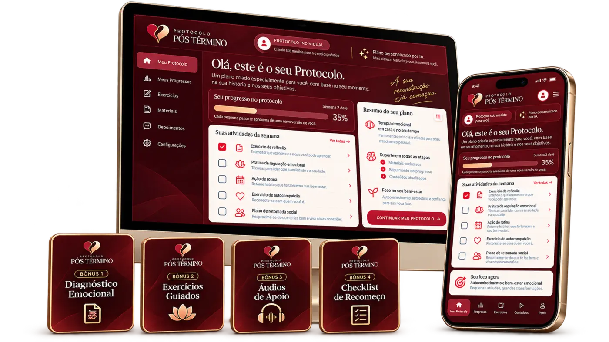

Para quem terminou, mas ainda não conseguiu seguir em frente.
Você responde perguntas sobre como está hoje, nós identificamos o seu momento e geramos um protocolo exclusivo, criado para você seguir durante os próximos 7 dias.
Muitas vezes, em um relacionamento, você vai deixando partes de si pelo caminho enquanto sua vida se mistura à do outro. E quando tudo acaba, não fica só a falta da pessoa — fica também o vazio da parte de você que ficou para trás.
Sua mente volta para as conversas, lembranças e para tudo que poderia ter sido diferente.
Mandar mensagem, olhar o perfil ou buscar alguma notícia parece impossível de evitar.
Enquanto você tenta sobreviver ao término, parece que seu ex simplesmente seguiu a vida.
Revive cada detalhe tentando descobrir o que poderia ter feito para evitar o fim.
Aperto no peito, ansiedade, falta de apetite, noites mal dormidas e uma sensação de vazio que não passa.
Você sabe que acabou. Só não conseguiu fazer essa dor acabar também.
Entenda o seu momento e receba um protocolo exclusivo para você, que vai funcionar em um ciclo de 7 dias, podendo ser repetido até que a dor se torne apenas uma lembrança de uma fase da sua vida.
É para isso que existe o Protocolo Pós-Término.
Você para de tentar adivinhar o que fazer e passa a ter um caminho claro para seguir.
Responda algumas perguntas rápidas sobre como você está se sentindo hoje.
É assim que identificamos o seu momento emocional atual.
Com base nas suas respostas, geramos um protocolo exclusivo para você.
Nada genérico. Você recebe direcionamentos de acordo com a sua dor e o seu momento.
Siga o passo a passo que foi criado para você.
Você vai saber exatamente o que fazer para parar de alimentar a dor e começar a retomar o controle.
Ao aplicar o protocolo da forma certa, você começa a se libertar da dor e deixar de ser refém desse término.
Mais controle. Mais clareza. Mais paz.
Sem depender de conselhos genéricos, sem continuar alimentando a dor e sem ficar preso(a) ao que já acabou.
Tudo no aplicativo
Baixe no seu celular e siga o seu plano de onde estiver — simples, prático e sempre com você.
Aprenda o que fazer com Instagram, WhatsApp, fotos, mensagens e outros gatilhos que fazem você voltar a procurar seu ex e alimentar a dor.
Entenda por que você se prende tanto a alguém e aprenda como começar a romper esse vínculo emocional para recuperar sua autonomia.
Aprenda a reconhecer sinais de manipulação emocional, excesso de intensidade no início da relação e comportamentos que podem confundir amor com controle.
Se você se identificou com pelo menos uma dessas situações, esse protocolo foi feito para o seu momento.
Tudo isso deveria custar:
R$ 622,00
Mas hoje você vai ter acesso por um valor muito menor…

Acesso imediato
Você paga uma única vez
9x de R$ 8,80
ou R$ 67,00 à vista
Sim, quero meu protocolo →Comece agora a dar o primeiro passo para deixar essa dor para trás.
Me responda com sinceridade…
Quanto tempo você ainda quer continuar preso(a) a uma história que já terminou?
Continuar pensando.
Continuar procurando.
Continuar revivendo.
Continuar sofrendo.
O término já aconteceu. Agora você precisa escolher o que fazer com o que ficou em você e resgatar sua essência.
Você pode continuar tentando lidar com isso sozinho(a)… ou começar hoje a seguir um caminho feito para o seu momento, com um protocolo que eu uso diariamente em meus atendimentos.
Quero começar agora →Quem está com você
Meu nome é João Chesca. Sou psicólogo e especialista em relacionamentos.
Há mais de 7 anos estudo comportamento humano, relacionamentos e os processos emocionais que fazem uma pessoa permanecer presa a vínculos que machucam.
Minha formação e prática passam por:
O Protocolo Pós-Término nasceu para transformar esse conhecimento em um caminho simples, prático e personalizado para quem precisa parar de sofrer e seguir em frente.
Acesso imediato
Você paga uma única vez
9x de R$ 8,80
ou R$ 67,00 à vista
Sim, quero parar de sofrer →Comece agora a dar o primeiro passo para deixar essa dor para trás.
Você responde um diagnóstico sobre o seu momento atual e, com base nas respostas, recebe um protocolo personalizado para seguir.
Não. Ele é gerado de acordo com as suas respostas e com o momento que você está vivendo.
Sim. Sempre que sentir necessidade, você poderá voltar ao processo e utilizar novamente.
Sim. O Protocolo Pós-Término foi desenvolvido para qualquer pessoa que esteja sofrendo após o fim de um relacionamento.
Se você ainda se sente preso(a), sofre com lembranças, saudade, ansiedade ou dificuldade para seguir em frente, o protocolo pode fazer sentido para o seu momento.
Não. A proposta é ser simples e prática. Você faz o diagnóstico, recebe seu protocolo e segue as orientações.
Após a compra, você receberá as instruções de acesso ao protocolo, à aula, ao aplicativo de acompanhamento e aos bônus.
Não. Você paga apenas uma vez e recebe acesso ao produto.
Não. O Protocolo Pós-Término é uma ferramenta de orientação e apoio e não substitui acompanhamento psicológico individual quando necessário.
Dê o primeiro passo para deixar essa dor para trás.
Quero meu protocolo →